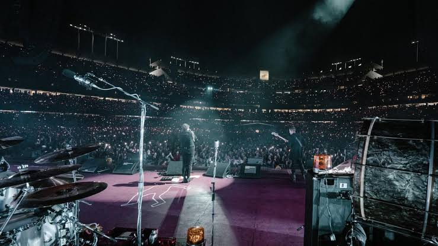

Dios esta cerca a ti
Por las heridas de Jesucristo fuimos curados y reconciliados con la paz que sobrepasa todo entendimiento.
Entrega hoy tu ansiedad, tu enfermedad y tus cargas al Padre celestial, creyendo con firmeza que su sacrificio en la cruz no solo trajo perdón a tu alma, sino también medicina y alivio perfecto para tus huesos y tu corazón quebrantado..
el amor inagotable de Dios que se moviliza a favor de quienes confían en Él.
Testimonios
Historias de quienes ya vivieron la sanación